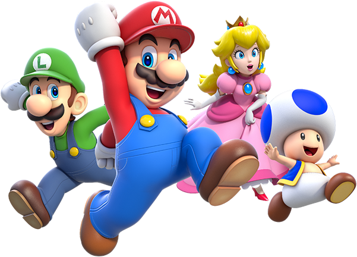

Mario é retratado como um encanador corpulento que vive na terra fictícia do Reino do Cogumelo com Luigi, seu irmão mais novo e mais alto.

X
Mario é retratado como um encanador corpulento que vive na terra fictícia do Reino do Cogumelo com Luigi, seu irmão mais novo e mais alto.